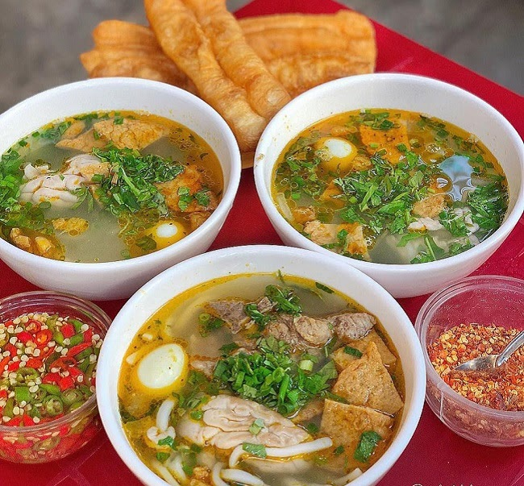
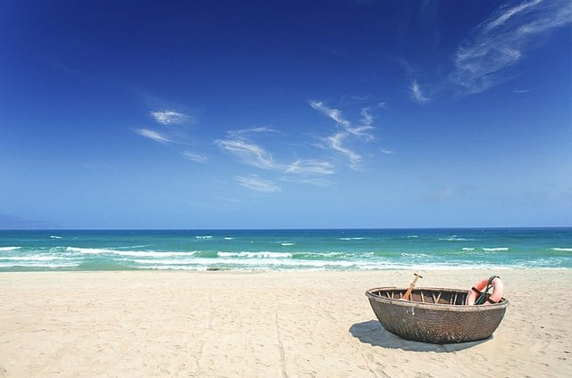
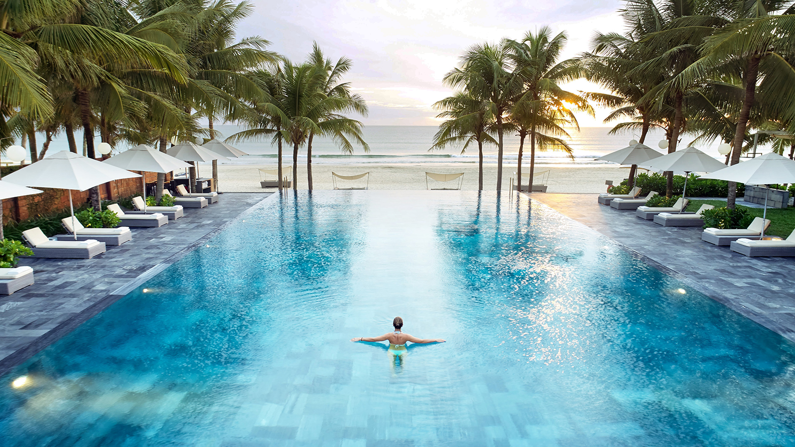

The food culture in Da Nang is pretty spicy and sweet
The most famous food in Da Nang is My Quang because it has a special taste that no other place can have it.
There so many other foods such as nem lui, kem ong, banh xeo,...

Hoi An is a famous travel place for tourist in Da Nang
There are so many traditionals clothes tailor that located in Hoi and
It is also one of the most historically known locations with 2000 years old

Bana Hill is considered as the most tourist place in Da Nang
In here you can experience the culture diffussion from different countries
through the wax museum or the parade

Beach and ocean are the place you can't miss out when you come to Da nang
It always so calming and beautiful that will make you always want to stay here forever.
It would be greate if you can spend your time to stay here to relax with your family or friends

Last but not least, you can't miss out the hotels in here
There are so many different luxuries hotels that own their private beach
You can definitely have some good photos and some quality time with those hotels.